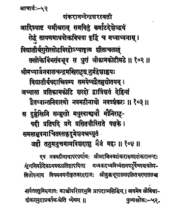

52. आचार्य - 52 - शङ्करानन्देन्द्र
आदिश्याष्ट ••• श्रीकामकोटीमठे॥ १०२ ॥
श्रीमद्यार्जुन ••• शङ्करः ॥ १०३ ॥
सुदुर्मुखिनि ••• नैजं महः ॥ १०४ ॥
एष ••• ध्येयम् ॥
He, as per the suggestions of the Sāyaṇa Mādhava, having commissioned the eight saints disciples to protect the tenets of Advaita and to check the development of the faith of Madhva in Karnataka, despite the unbearable separation from the master preceptor Vidyātīrtha, returned from Himalayas and under his (master's) directions held the responsibilities of the Kāmakoṭi Maṭha.
Son of Balacandra Makhi of Madhyārjuna, by name Maheśa (before initiation), having received initiation into asceticism from Vidyātīrtha, popularising among people Advaita among the systems and dispelling the ignorance caused by dvaita, the head of nine Maṭhas, the Navaśaṅkara, headed the Kāmakoṭi Piṭha for thirty-two years.
He the pleasing one, the great preceptor with a sweet speech, the intelligent One, adored by all in the world, shed his physical body on the pratipad of bright fortnight in the month of Vaiśākha of the year Durmukhi; entered at once into his effulgence.
This preceptor Śrī Abhinva Śaṅkara or Śaṅkarānanda also known as Navamaṭhīnātha, was the founder of nine Maṭhas - Śṛṅgeri etc. adept in destroying the schools of Madhva, the one who made the idol Varadarāja appear as Lord Śiva to wipe off the predominance of Vaiṣṇavism, adored by the king Bukka, renowned everywhere attained siddhi near Kāṅcipuram.
This preceptor is the one who initiated the tradition of Śrividya mudrā.
